| Title/story | Source images | Mosaic |
| These images of the Berkeley rose garden come from just around the corner of my house. Amusingly, Google seems to have implemented one of the bells and whistles from part 2 and very helpfully offered an "auto-awesome" photo of these images as a pre-stitched panorama. Thanks, Google! | 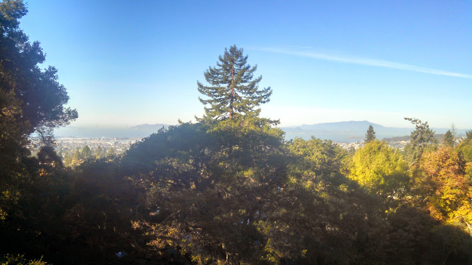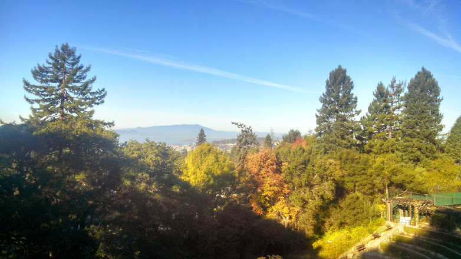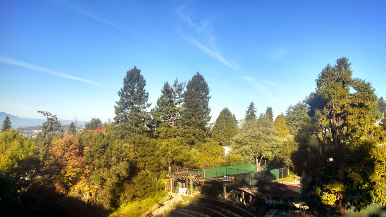 | 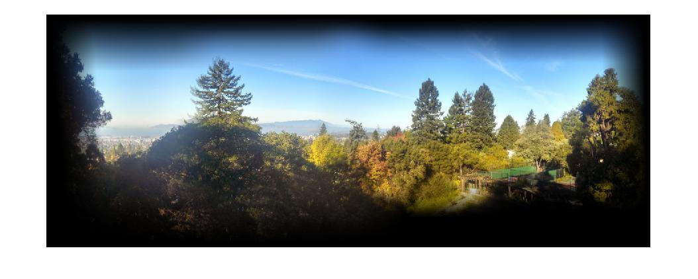 |
| These images, taken on Oahu when I was there recently for a conference, surprised me a little when they worked. I knew that we had a panorama assignment coming up, so I snapped several photos, but this was before I knew about the hard constraint of taking photos from the same spot. Still, they worked out well (aside from the exposures...). | 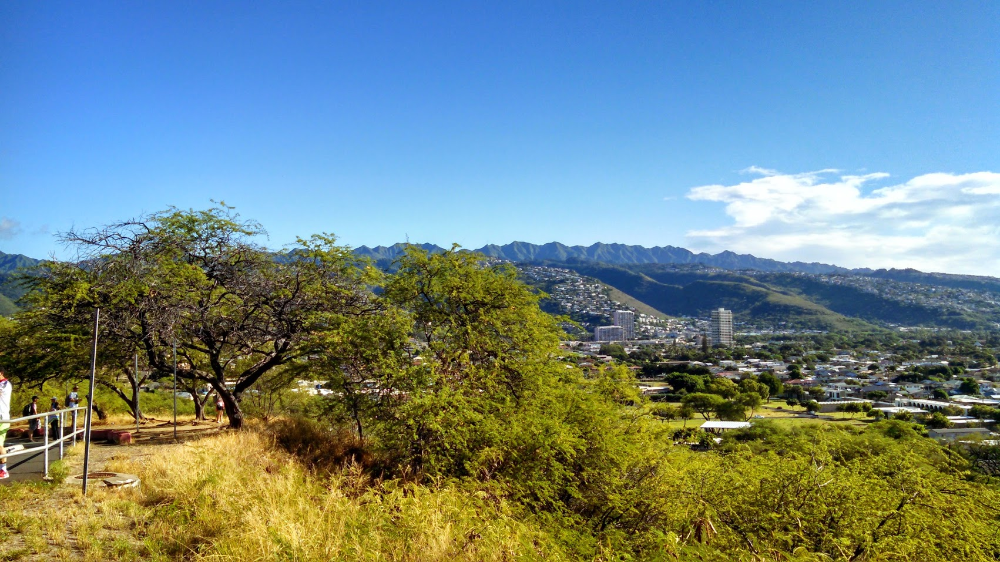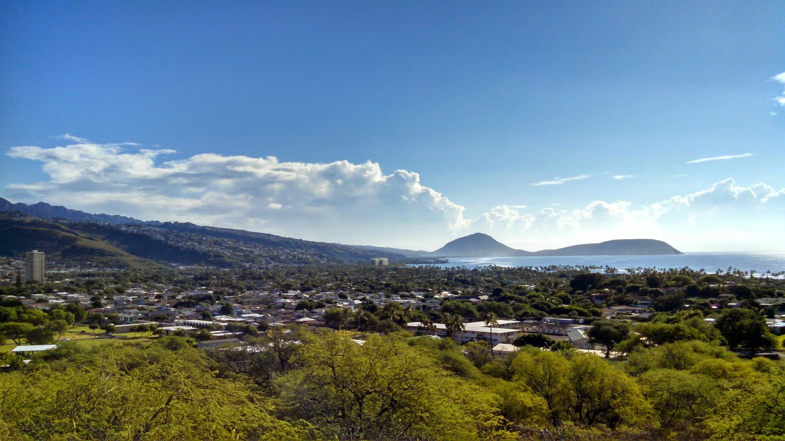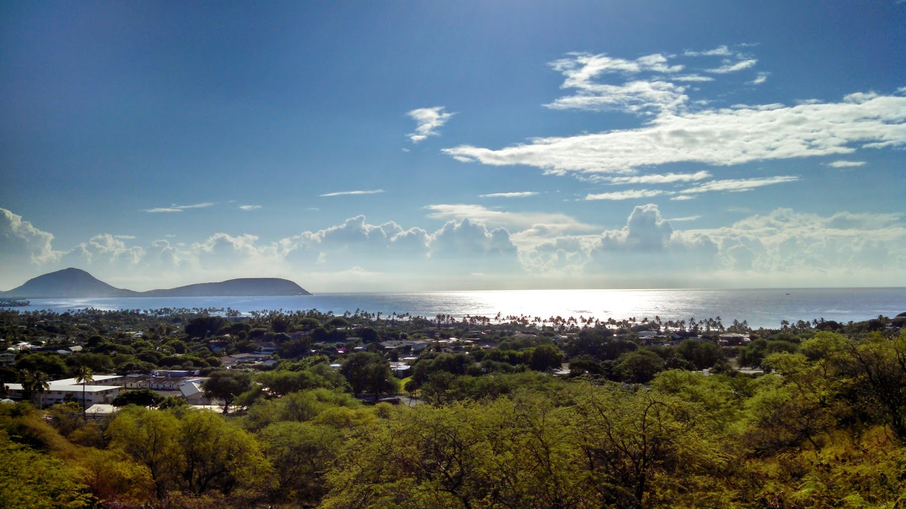 | 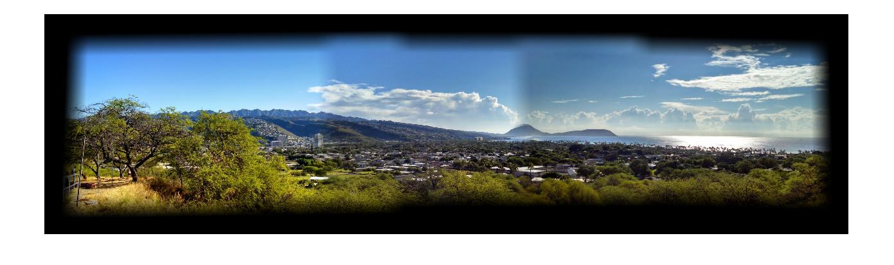 |
| These images, of Munich international airport, were clipped from a video I apparently randomly decided to take of the airport when I flew through in July. I stood in one spot in front of the terminal and spun around, and to build this mosaic I just screenshotted a few frames nearby each other. The billboard top doesn't match up extremely well (not rectified), I think because I had a challenging time finding any keypoints along that part of the image to force alignment on. | 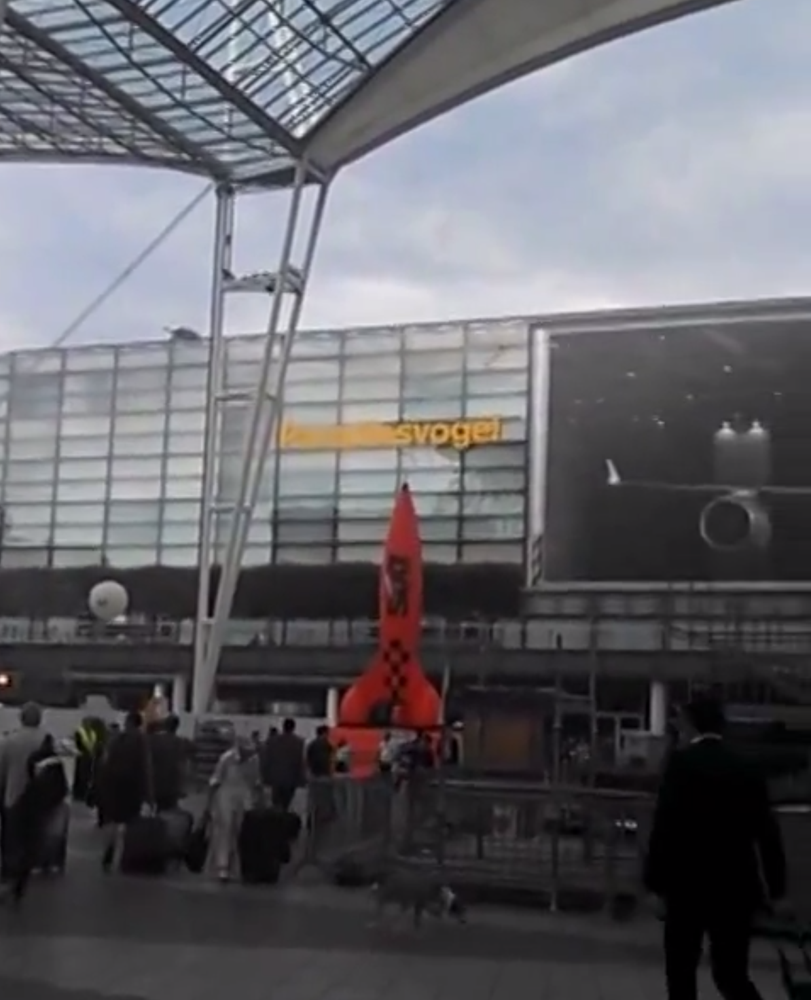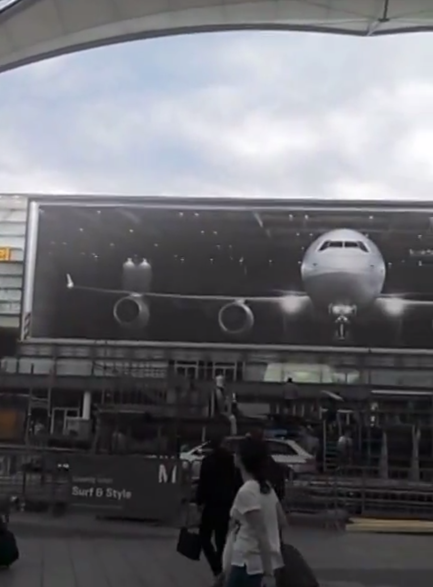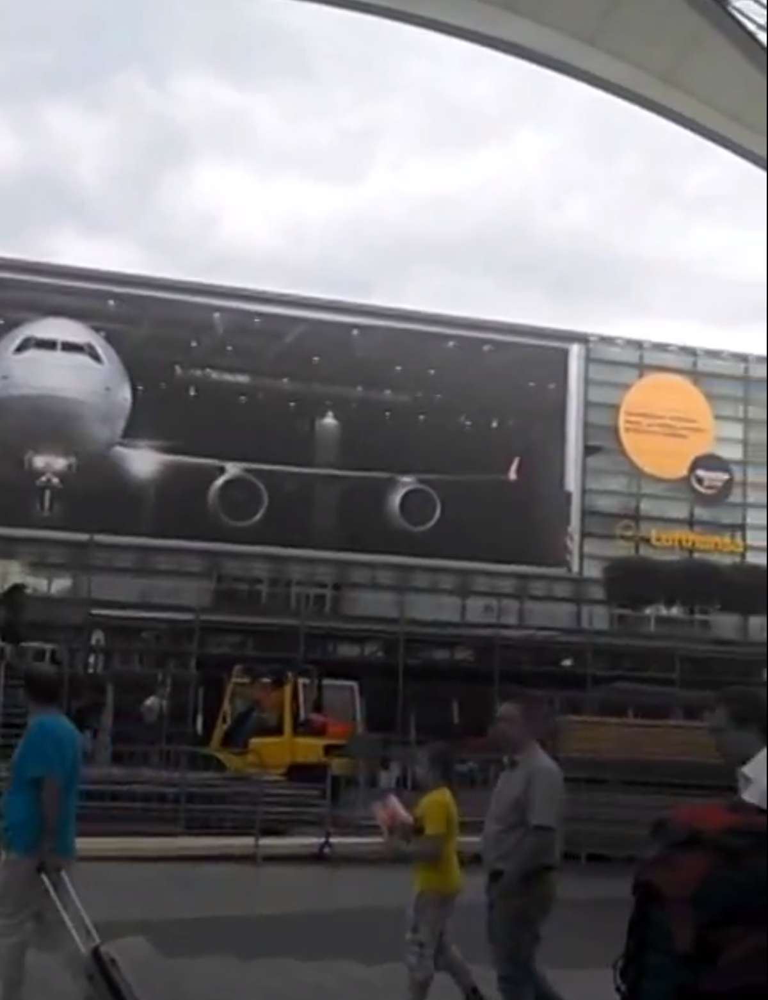 |  |